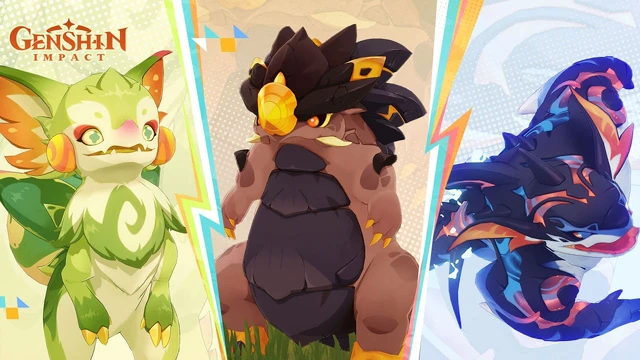

Natlan · Species & Creatures
Natlan’s Saurians
Saurians are Natlan creatures that live alongside the region’s people and appear in exploration and story quests.

The Noble Kin of the Dragon Realm
Across the volcanic canyons, thermal springs, and canopy forests of Natlan, human warriors live alongside Saurians—the evolutionary descendants of the ancient dragon race that ruled Teyvat before the dawn of humanity. While dragons in other nations are often solitary, ancient leviathans, Natlan's Saurians have adapted over millennia to live in joyful, intimate symbiosis with the Six Great Human Tribes.
Saurians are not treated as domestic cattle or disposable war mounts; they are regarded as family, brothers-in-arms, and cultural kin. A Natlan child often grows up alongside a Saurian whelp, forging a lifelong bond of emotional resonance that enables them to coordinate with extraordinary precision in both peaceful daily chores and harrowing combat against the Abyss.
The Specialized Breeds of the Six Tribes
Through centuries of environmental adaptation, several distinct Saurian breeds evolved, each possessing specialized biomechanical abilities that match the territory of their human tribe partners:
• Tepetlisaur (Children of the Echoes): Armored, powerful terrestrial Saurians with subterranean claws that allow them to swim through solid rock and cliff faces as if it were water, unearthing precious minerals. • Yumkasaur (Scions of the Canopy): Agile, arboreal Saurians that can ingest explosive flame berries and launch high-velocity grappling hooks from their mouths, swinging effortlessly across yawning canyon voids. • Koholasaur (People of the Springs): Sleek, aquatic Saurians with fins that enable them to skim across liquid lava pools and rushing sea currents at blinding speeds, generating shockwaves on the water's surface. • Qucusaur (Flower-Feather Clan): Feathered, majestic aerial Saurians that soar through the thermals of high volcanic peaks, carrying riders across immense sky distances.
The Art of Indwelling
Unique to Natlan is the spiritual ability known as 'Indwelling'—a mystical technique that allows a human warrior (and the Traveler) to project their consciousness into a wild or allied Saurian. When indwelling, the human's physical body dissolves temporarily into spirit, taking direct control of the Saurian's elemental anatomy.
Indwelling is not an act of mental domination; it is an act of shared spiritual consent rooted in the mutual harmony of dragon and human souls. Through indwelling, warriors experience the world through the Saurian's acute instincts, feeling the vibrations of the bedrock, the thermal currents of the air, or the fluid dynamics of hot springs.
Warriors of the Night Kingdom
In Natlan's desperate, eternal struggle against the Abyss, Saurians fight on the frontlines alongside human champions. When Abyssal incursions breach the borders, Saurian packs defend the tribes with ferocious loyalty, willingly laying down their lives to protect human infants and sacred tribal shrines.
Their souls, like those of mortal warriors, return to the Night Kingdom, remembered in the sacred songs of the land. In a world where dragons and gods have so often fought for dominance, Natlan's Saurians represent a radiant beacon of unity: the living proof that different species can walk hand-in-hand as equals.
This is an original CoreGG reading guide, not an official HoYoverse article or a reproduction of the game text. Source links below identify the records used so you can check the original context.
Sources & references
Check these sources for the original game text and reference trail.